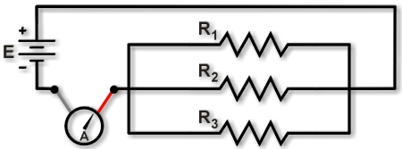
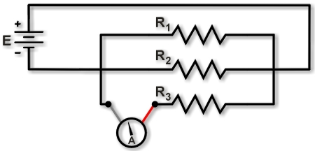

|
 |
|
 |
To measure current, you must insert the ammeter into the circuit to intercept the electric charge flowing in the wires. That means you must “break the circuit” by lifting a lead, and then complete the circuit using the probes of the ammeter.
To measure a circuit’s total current, lift a lead connected to the battery (or power source) and insert the ammeter, as shown in Figure 1. On a breadboard, this requires lifting the lead that provides power to the parallel-resistors. The ammeter then measures the sum of the current through all the parallel resistors.
To measure the current through just one resistor, lift the one resistor’s lead and insert the ammeter, as shown in Figure 2: measuring the current through R3. On a breadboard, this requires lifting the lead of the one resistor and connecting the ammeter probes between the R3 lead and the power source. The ammeter then measures the current through R3.
Look closely to note the subtle differences between Figure 1 and Figure 2.